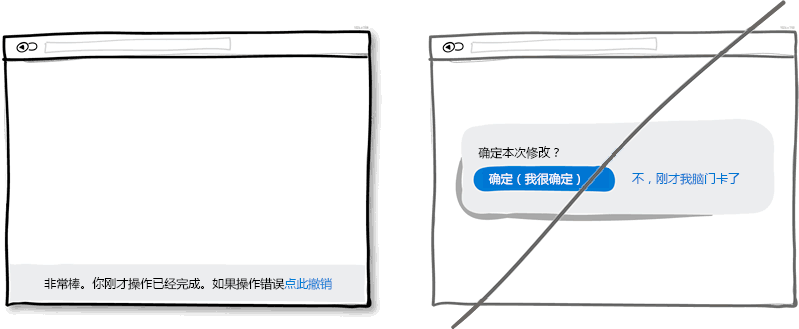

交互规范 - 界面设计四十准则 / Interaction Specification

原则名称
说明

示例
1
尽量使用单列
而不是多列布局
• 单列布局能够让对全局有更好的掌控。同时用户也可以一目了然内容。而多列而已则会有分散用户注意力的风险使你的主旨无法很好表达。最好的做法是用一个有逻辑的叙述来引导用户并且在文末给出你的操作按钮。
2
放出礼品往往
更具诱惑力
• 给用户一份精美小礼品这样的友好举动再好不过了。具体来讲，送出礼品也是之有效的获得客户忠诚度的战术，这是建立在人们互惠准则上的。而这样做所带来的好处也是显而易见的，会让你在往后的活动进展（不管是推销，产品更新还是再次搞活动）中更加顺利。
3
合并重复的功能
而使界面简洁
• 在整个产品开发期间我们会有意无意地创建很多模块，版面或者元素，而它们的功能可能有些是重叠的。此种情况表明界面已经过度设计了。时刻警惕这些冗余的功能模块，它无用且降低了电脑性能。此外，界面上模块越多，用户的学习成本就越大。所以请考虑重构你的界面使它足够精简。
4
客户的评价
好过自吹自擂
• 在获得项目机会或提高项目转化率时客户的好评是一种极为有效的手段。当潜在客户看到其他人对你的服务给予好评时，项目机会会大增。所以试着提供一些含金量高的证据证明这些好评是真实可信的。
5
频繁展示你的主旨
来加深印象
• 多次重复主旨口号这种方法适用于界面很长或者分页的情况。首先你肯定不想满屏刷出相同的信息，这样会让人生厌。但当页面足够长的时候这些重复就显示自然多了并且也不显得拥挤。所在在页面顶部放一个按钮然后在页面底部再适当放个突出的按钮的做法没有什么不妥。这样当用户到达页面底部在思考接下来该做什么的时候，你提供的按钮就可以获得一个潜在的合同或者即使用户不需要你的服务这个按钮也可以起到过滤的作用。
6
将选项与按钮
区分开来
• 诸如颜色，层次及模块间的对比这些视觉上的设计可以很好地帮助用户使用产品：他时刻知道当前所处的页面以及可以转到哪些页面。要传达这样一个好的界面，你就需要将可点击的元素（比如连接，按钮），可选择的元素（比如单选多选框）以及普通的文字明显区分开来。在下图的例子中，我将点击操作的元素设置为蓝色，选中的当前元素为黑色。这样适当的设计可以让用户很方面地在产品的各模块间切换。但千万不要把这三种元素设计得混乱不堪。
7
给出推荐
而不是让用户来选择
• 当展示许多项服务时，给出一个重磅的推荐项是个不错的做法，尽管推荐的设置无法满足所有用户。这么做是有理论依据的，一些研究已经揭示了这么一种现象：当面临的选择越多时，用户就越难做出决定。所以你可以高亮某个选项来帮助用户做出选择。
8
给出撤销操作
来代替确定操作
• 假设你刚点击了一个连接或者按钮，撤销操作可以让操作流畅自然，这也符合人类的本能。而每次操作都弹一个确定框则好像是在质问用户你明白不明白这个操作会产生什么后果。我还是更习惯假设用户每次操作都是正确的，其实只有极少数情况下才会发生误操作。所以，为了防止误操作而设计的确认窗口其实是不人性化的，用户每次操作都需要进行毫无意义的确定。所以请考虑在你的产品里实现撤销操作来增加用户的操作友好度吧。
9
指出产品适用人群
而不是做成全年龄
• 你是想把产品做成大众化的呢还是有精确的适用人群？在产品定位上你需要更精确些。通过不断了解目标客户的需求及标准，你能把产品做得更好得到更多与客户交流的机会，并且让客户觉得你很专业，在这方面是独家提供的优质服务。把产品定位得精确的风险就是可能缩小了目标潜在客户的范围，也使自身变得不那么全能。但这种做得更专业的精神却反过来会赢得信任，权威。
（贴士：喜欢下图中可爱的小人物造型么？去了解MicroPersonas吧）
10
试着直接果断
而不要唯唯诺诺
• 你可以通过不确定而颤抖的声音来表达传递自己的意思，当然也可以通过很自信的方式表达。如果你在界面中的表述用语多以问号结束，比如"也许"，"可能"，"感兴趣？" 或者"想要试试么？"，那么你完全还可以把语气变得更坚定一些。不过万事无绝对，或许适当放松措词让用户有自行思考的余地也是可以的。
11
界面要有鲜明对比
让人容易区分
• 把主要功能区从界面中突出显示出来效果会好很多。使你的主要口号醒目有很多种方法。通过明暗色调的对比来突显。通过为元素添加阴影渐变等效果让界面富有层次感来张显主题。最后，你甚至可以在色相环上专门选择互补色（比如黄色与紫色）来设计你的界面，以达到突出重心的目的。综合所有这些，最后得到的界面会使你的主要意图与界面其他元素有明显的区分，得到完美的呈现。
12
指明产地
• 指明你的地区，所提供的服务，产品来自哪里意义重大，同时也将与客户的沟通引入了一个更具体带有地域特色的场景中。指出具体来自哪里，国家，省分及城市，也是一种在进行自我介绍或产品展示时被常常提及的。当你在界面设计中实现这点时，让人觉得非常友好。同时指明区域也会隐形提高产品的声誉，好上加好。
13
精简表单内容
• 人生性就懒惰，在填写表单时也是同样的道理，没人愿意填写一大堆表单字段。表单中每个字段都会有失去用户的风险。不是每个人打字都很快速的，并且在移动设备上进行输入更是相当麻烦的事情。问下自己表单中是不是每个字段都必需，然后尽量减少表单中的字段。如果你确实需要一大堆信息让用户填写，试着将它们分散在不同页面，在表单提交后还可以继续补充。过多字段很容易让整个表单显示臃肿，当然想简洁也很容易，只放少数字段。
14
暴露选项
而不要将操作隐藏
• 你使用的任何一个下拉框都会对用户造成信息的隐藏而需要额外的操作才能显示。如果这些信息是贯穿整个操作所必需的，那你最好把它展示出来做得更显而易见一点。下拉框最好用在选择日期，省份等约定俗成的地方。对于程序中重要的选项最好还是不要做成下拉形式。
15
把界面做得环环相扣要好过直白的排版
• 一个平淡无奇行文无疑会让用户失去兴趣而继续阅读。是的，单列滚动的长页面是不错的，但是我们应该适当地设置一些小节，并且环环相扣，来提高用户的兴趣使其继续阅读。但需要注意的是节与节之间的留白不要太大。
16
不要放太多链接
分散用户注意力
• 为了满足各式用户的需求，在页面上放些链接链到这里链到那里是常见的做法。如果你的主要目的是想让用户点击页面最后那个下载按扭什么的话，就需要三思了。因为用户可能点击了其他链接离开页面了。所以你需要注意页面的链接数量，最好将用于导航与用于操作的链接用样式区分开。尽量移除页面不需要的链接会让用户点击到你的功能按钮。
17
将操作的状态
或者进度呈现出来
• 现如今大多界面当中已经呈现了各色样式的进度条或者标明状态的图标，比如邮件有已读或未读的状态，电子帐单有支付或未支付的状态。而在界面上呈现这样的状态对于用户来说是很有必要的。这样用户就可以知道某些操作是否成功，接下来准备进行怎样的操作。
18
不要让用户觉得
是在完成任务
• 试想界面上有这样两个按钮：一个是"获取折扣"，另一个是"立即注册"。我敢打赌大多数人会点击第一个，因为第二个按扭让人感觉不到有利可图，并且"注册"让人联想到填不完的表单。也就是说让用户感受到获利的按钮更有可能被点击。这种让用户感到好处的文字信息也可放在按钮旁边，不一定要做为按钮的标题。当然，正常的按钮还是有用处的，一般用于重复性操作频繁的地方。
19
让操作直观
而不是让人觉得
找不到上下文
• 不用说直接在元素身上进行操作是更直观明了的方式。比如在一个列表中，我们想让用户对每个条目进行操作那么就把按钮放到当前条目上，而不要把放到列表之外。再比如就是直接点击元素就进入编辑状态（比如页面上的地址信息点击后可以进行编辑）。这种方式比传统的选中再点击相应的按钮进行操作要简洁省事得多。当然，对于一般性的操作本身就不需要有什么上下文的，就没必要这么做了，比如页面上的前进，后退按扭。
20
尽量显示全部内容
而不要额外页面
• 在一个足够大的宽屏界面上最好还是直接给出表单，这比点击按钮再弹出表单要好很多。首先减少了点击操作，流程变得简洁也节省了时间。其次，直接呈现出表单可以让用户知道表单有多长，其实也是在告诉用户注册花不了多少时间。当然，这条规则适合注册表单非常简单的情况。
21
让界面平滑显示
而不要死板地呈现
• 用户进行操作过程中，界面上的元素会经常出现，隐藏，打开，关闭，放大缩小移位等。给这些元素增加些自然的动画，淡入淡出效果不但美观，也更符合实际，本来元素尺寸位置的变化就是一个需要时间的动画过程。但要注意动画时间不要设置过长，那样会让想尽快完成操作的用户不耐烦。
22
循序渐进的引导
而不要直接
让用户注册
• 与其让用户马上注册，何不让用户先进行一些体验式的操作呢。这个体验过程可以展示程序的功能，特性等。一旦用户通过简单几步的操作了解了程序的价值所在，那么它会更愿意填写注册表单的。这种循序渐进的引导可以尽量推迟用户注册的时间但又可以让用户在没注册的情况下进行个性化设置等简单操作。
23
过多边框
会让界面四分五裂
• 过多边框会喧宾夺主。不用说，边框确实在划分区域进行版块设置时有很大的作用，但同时其明显的线条也会吸引走用户的注意力。为了达到划分版块又不转移用户注意力的目的，在排版时可以将界面上不同区域的元素通过空白进行分组，用上不同的背景色，将文字对齐方式进行统一，还有就是为不同区域设置不同的样式。当使用所见即所得的界面设计工具时，我们经常在界面上方便地拖出很多区块来，这些区块多了就会显得杂乱无章。所以我们又会到处放些横线来分界。一个更好的做法是将区块垂直对齐，这样做不会让那些多余的线条来扰乱视觉。
24
展示产品带来的好处而不要罗列产品特性
• 市场就是这样的，用户永远只关心自身利益而产品特性对他们来说倒不是那么重要。只有利益才更直观地体现出使用产品所带来的价值。Chris Guillebeau在他的著作《100美元起家》中指出，相比压力，冲突，烦心事和未知的未来，人们在乎得更多的是爱，金钱，认同感和自由支配的空闲时间。所以我相信在展示产品特性时回归到利益上是必要的。
25
考虑零数据的情况
• 界面上经常需要呈现不同数量的数据，从0，1，10，100到10000+等。这里存在个普遍的问题就是：在程序最开始使用的0条数据到过度到有数据之前，该如何进行显示界面。这也是我们经常忽视了的地方。当程序初始没有数据时，用户看到的就是一片空白，此时用户可能不知道该进行哪些操作。利用好没有数据的初始界面可以让用户学习和熟悉如何使用程序，在程序中创建数据。力臻完美永远是我们追求的目标，界面设计也不例外。
26
默认将用户引入
• 将界面做成默认用户选中想要使用你的产品，意味着如果用户真的需要使用，那么可以直接点击确定而不需要额外点选了。当然，也有另一种做法就是默认不选中服务，用户需要的话可以手动点选。前者这种设计更好的原因有两点。一是用户不需要额外点选，非常省事，因为默认设置为用户需要我们的产品或服务。二是这种做法某种程度上是在向用户推荐产品，暗示了其他人都选择了我们。当然，将界面设计成默认选择的样子多少存在点争议，有点强迫用户的感觉。如果你想道德一点，你可以要么把让用户选择的文字写得模棱两可，要么使用双重否定这样不那么直白的描述，这两种方式都可以让用户觉得没有那么强的感觉是被强迫选择使用产品的。

27
界面设计得一致
不要增加用户的
学习成本
• 自从Donald Norman的一系列著作面世后，界面设计中尽量保持一致性成了一个普遍遵循的准则。在设计中保持一致性可以减少用户的学习成本，用户不需要学习新的操作。当我们点击按钮，或者进行拖拽操作，我们期望这样的操作在整个程序的各个界面都是一致的，会得到相似的结果出来。反之我们需要新情境下重新学习某种操作会产生何种结果。可以在很多方面下功夫来实现一个一致的界面，包括颜色，方向，元素的表现形式，位置，大小，形状等。不过在让界面变得一致之前，记住一点，适当的打破整体的一致性也是可取的。这偶尔的不一致性的设计用在你需要强调的地方可以起到很大的作用。所以世事无绝对，我们应遵从一致的设计准则，但适当地打破这种常规。
28
使用较贴切的默认值会减少操作
• 适当的默认值和预先填充好的表单字段可以大量减少用户的工作量。在节省用户宝贵的时间上面，这是种非常常见的做法，可以帮助用户快速填完表单或者注册信息。
29
遵从一些约定
而不要去重新设计
• 界面设计中遵从约定的准则跟之前的界面一致性准则很相似。如果我们遵从了界面设计中的一些约定，用户用起来会很方便。相反，不一致和没有遵从约定的设计则会提高学习成本。有了界面设计中这些约定，我们想都不用想就知道界面右上角（大多数情况下）的叉叉是关闭程序用的，或者点击一个按钮后我们能够预测到将会发生什么。当然，约定是会过时的，随着时间的推移，同样的操作也有可能被赋予新的含义。但要记住，当你在界面中打破这些常规时一定要目的明确，并且出发点是好的。
30
让用户觉得
可以避免失去
而不是获得
• 我们喜欢成功，没有谁愿意失败。根据心理学得到的可靠结论，人们一般更顷向于避免失去拥有的东西而不是获得新的利益。这一结论也适用于产品的设计和推广中。试着说明你的产品会帮助客户维护他的利益，保持健康，社会地位等要好过告诉客户这个产品会带来一些他未曾拥有的东西。比如保险公司，它是在销售我们出事之后可以得到的大笔赔偿呢还是在强调可以帮助我们避免失去拥有的财产？
31
具有层次的
图形化展示
优于
直白的文字描述
• 具有层次的设计可以将界面上重要的部分与不次要部分区分开来。要让界面层次分明，可以在这些方面做文章：对齐方式，间距，颜色，缩进，字体大小，元素尺寸等。当所有这些调整运用得适当时，可以提高整个界面的可读性。相比在一个很直白的界面上用户一眼就可以从上瞟到底的设计，这样分明的设计也可以让用户放慢速度来慢慢阅读。这样也使界面更有特色一些。就好比一次旅行，你可以乘坐高铁快速到达景区（从页面顶部瞟到底部），但你也可以慢行以欣赏沿途风光。所以层次分明的设计让眼睛有可以停留的地方，而不是对着空白单调的一个屏幕。

32
将有关联的功能分组而不是杂乱无章
• 将各个功能项分组合并起来可以提高程序的可用性。有点常识的人都知道刀子和叉子，或者打开文件和关闭文件是放在一起的。将功能相近的元素放在一起也符合逻辑，符合我们平时的认知。
33
使用内联的验证消息而不是提交后再验证
• 在处理表单时，最好立即检测出用户所填写内容是否符合要求然后给出验证消息。这样错误一出现能就能得到改正。相反，提交后再检查表单会给出错误消息，会让用户感到乏力又要重复之前的工作。
34
放宽对用户
输入的要求
• 对用户输入的数据，尽量放宽限制，包括格式，大小写什么的。这样做可以更人性化一点，也使得界面更加友好。一个再恬当不过的例子就是让用户输入电话号码的时候，用户有很多种输入方式，带括号的，带破折号的，带空格的，带区号和不带区号的等等。如果你在代码中来处理这些格式的问题，代价也只是你一个人多写几行代码而以，却可以减少无数用户的工作量。
35
让用户感觉需要
快速做出响应
而不是毫无时间观念
• 适当的紧迫感是个有效的战术可以让用户立即做出决定而不是等上个十天半个月。重要的是这种战术屡试不爽，因为它暗示了资源的紧缺或者活动的时间有限，今天可以买，但明天可能就无法这么低价了。另一方面，这一战术也让用户感到会错失一次大好的机会，再一次，应用了人们害怕失去的本性。当然，这种战术会被一些人嗤之以鼻，认为是不耿直的做法。不过，这只是种战术而以，并且在保持合法性的前提下应用也无伤大雅。所以请不要为了营销而在界面上制造紧迫的假象。
36
使用饥饿营销
• 物以稀为贵。饥饿营销给出的信息就是东西不多，只剩几件，明天再来，可能没了。你去比较一下批发与限量版的东西他们的价格差距有多大就知道了。回过头来看，那些批发商或者大零售商，他们也使用饥饿营销，以获得更好的销量。但在软件行业，我们经常会忘记有饥饿营销这回事。因为数字产品是可以很容易拷贝复制的，不存在缺货的情况。其实，在界面设计中，也可以将其运用起来与现实中的资源紧缺进行联系。想想一次网上研讨会的门票，想想你一个月可以服务的人数限制，这些信息都可以告知用户是有限的。
37
让用户选择
而不是重新填写
• 这一界面设计中的经典准则是有心理学依据的，相比要让某人回想想某样东西，从一堆东西中认出某样东西会更容易些。辨识出一样东西只需要我们稍微回忆一下，通过一些线索就可以完成。而回想则需要我们全面搜索自己的大脑。也许这也是为什么试卷上选择题会比简答题做得快的原因。所以试着在界面上展示一些用户之前涉及到的信息让他们进行选择，而不是让他们想半天然后自己填写。
38
让点击更轻松
• 像链接，表单的输入框还有按钮等，如果尺寸做得大一点则点击起来更方便容易些。根据费特定律，使用像鼠标这样的外设来点击需要一些时间，特别是元素比较小的情况下，时间会更多。鉴于此，最好还是把你的表单输入框，按钮等做大点。抑或者你可以保持原有的设计不变，只是把元素可点击区域（也就是热区）增大。这样的一个典型例子是手机设备上的文本链接和导航菜单，它们文字不一定很大但背景是拉伸的，在很宽范围内点击都有效。
39
优化页面加载速度
不要让用户等太久
• 速度很重要。页面加载速度和UI对操作的响应速度都直接关系到用户是否有耐心继续等下去。无疑地每多一秒种的等待都会失去一些用户或者项目机会。一个好的解决之道当然就是优化你的页面和图片。除此之外还可以运用心理学让这个等待时间显得不那么长。具体来说有两种技巧。一是显示进度条，二是展示其他相关或有趣的东西来吸引用户的注意力（就好比你沿着传送带走走总比傻站在原地盯着一个位置看要好得多吧）。
40
除了按扭外
快捷键也必不可少
• 当你的程序广为流传，应该考虑下高级用户的感受。人们总是试图为一些重复性的操作找到更快捷的方法，快捷键就应运而生了。相比在界面上点来点去，快捷键无疑大大提高工作效率。一个好的例子就是现今流行于各个主流程序中的J（后退）K（前进）快捷键组合，比如在Gmail，Twitter和Tumblr中。按钮固然好，但快捷键会锦上添花。




Create by Skyfire At Beijing,P.R.China
Compiled in 2016-07-19 17:21:47
简约 · 极致 · 传承
原文地址：http://goodui.org
翻译地址：http://www.cnblogs.com/Wayou/p/3539829.html